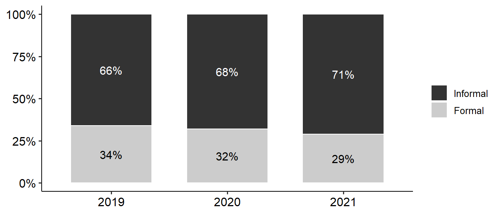
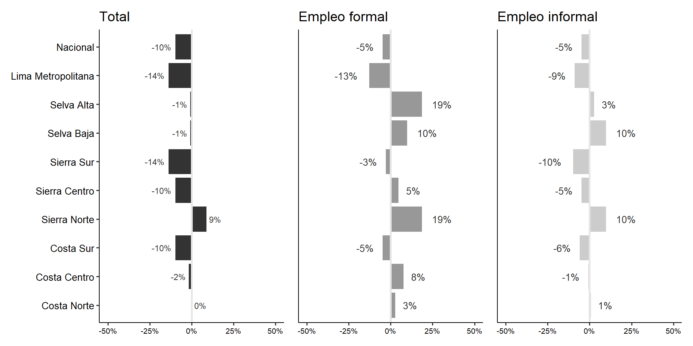

Durante los años 2019 y 2021, la PEA experimentó cambios atípicos en comparación a años pasados. Desde 2015, la PEA había variado entre 2 y 4 puntos porcentuales hacia el alza (INEI 2021). Sin embargo, durante el periodo de estudio, vemos una reducción de la PEA ocupada del 10% y un aumento de la PEA desocupada en 3% hacia 2020. A esta caída a inicios de la pandemia le sigue una recuperación parcial en 2021 que, si bien es prometedora, no se equipara a los niveles prepandemia.
Figura 1: Características de la PEA urbana entre 2019 y 2021
La Tabla 1 muestra cómo se experimentó, en el ámbito urbano, la caída de la PEA ocupada en 2020. Cerca a 2 millones de empleos se perdieron en el ámbito urbano en 2020. Solo en Lima Metropolitana se perdieron 150 mil empleos respecto del 2019 siendo la región más afectada. Se puede observar que la recuperación hacia el 2021 ha sido sostenida, incluso destaca la Selva y el Sur (Costa y Sierra) los cuales han excedido los niveles de empleo prepandemia mostrando una mejor recuperación en líneas generales.
Por otro lado, si bien las ciudades con 500 000 habitantes a más fueron las que más empleos perdieron, alrededor de un millón de empleos, las ciudades intermedias de 50 a 100 mil habitantes fueron las que proporcionalmente perdieron más empleos con cerca de 22% de empleos perdidos en 2020.
Tabla 1: Características de la PEA ocupada urbana según dominio y estrato entre 2019 y 2021 (porcentajes verticales)
2019
2020
2021
Variable
Total en miles (%)
Total en miles (%)
Total en miles (%)
Nacional
19,747 (100.00%)
20,153 (100.00%)
20,558 (100.00%)
Dominio Geográfico
Costa Norte
3,285 (16.64%)
3,349 (16.62%)
3,406 (16.57%)
Costa Centro
1,537 (7.78%)
1,563 (7.76%)
1,585 (7.71%)
Costa Sur
466 (2.36%)
468 (2.32%)
481 (2.34%)
Sierra Norte
469 (2.38%)
479 (2.38%)
517 (2.51%)
Sierra Centro
1,497 (7.58%)
1,531 (7.59%)
1,554 (7.56%)
Sierra Sur
2,215 (11.22%)
2,273 (11.28%)
2,326 (11.31%)
Selva Baja
1,613 (8.17%)
1,663 (8.25%)
1,653 (8.04%)
Selva Alta
348 (1.76%)
360 (1.79%)
394 (1.92%)
Lima Metropolitana
8,317 (42.12%)
8,467 (42.01%)
8,641 (42.03%)
Ciudad (hab.)
500 000 a más
9,718 (49.21%)
9,926 (49.25%)
10,259 (49.90%)
100 000 - 499 999
3,916 (19.83%)
3,808 (18.90%)
3,437 (16.72%)
50 000 - 99 999
1,131 (5.73%)
1,071 (5.32%)
1,152 (5.60%)
20 000 - 49 999
1,718 (8.70%)
1,789 (8.88%)
1,816 (8.83%)
2 000 - 19 999
3,264 (16.53%)
3,559 (17.66%)
3,895 (18.94%)
Dentro de la PEA ocupada, se observa que más del 50% de los trabajadores son hombres y es una situación que se replica en el empleo informal. Se tiene que 1 de cada 7 hombres trabajadores perdieron su empleo, mientras que 1 de cada 5 mujeres trabajadoras perdieron su empleo en 2020. Hacia el 2021, se observa que tanto hombres como mujeres han tenido una recuperación en términos del tamaño de la fuerza laboral siendo más lento en el caso de las mujeres. Además, la Tabla 2 nos muestra una caída en el empleo principalmente en la población de 25 a 44 años seguido de los trabajadores de 14 a 24 años. De esta manera, hallamos que la pandemia ha impactado principalmente a los trabajadores adultos jóvenes quienes hacia finales de 2021 no habían restaurado los niveles prepandemia. Asimismo, se observa de manera preocupante que los trabajadores mayores de 60 años no han recuperado su situación prepandemia por lo que este ajuste se está dando con lentitud.
Tabla 2: Características de la PEA ocupada urbana según sexo y grupo de edad entre 2019 y 2021 (porcentajes verticales)
2019
2020
2021
Variable
Total en miles (%)
Total en miles (%)
Total en miles (%)
Nacional
13,360 (100.00%)
11,172 (100.00%)
13,229 (100.00%)
Sexo
Hombre
7,364 (55.12%)
6,421 (57.48%)
7,405 (55.97%)
Mujer
5,996 (44.88%)
4,750 (42.52%)
5,825 (44.03%)
Grupos de edad
14-24
2,095 (15.68%)
1,658 (14.84%)
2,079 (15.72%)
25-44
6,442 (48.21%)
5,445 (48.74%)
6,421 (48.53%)
45-59
3,318 (24.83%)
2,922 (26.15%)
3,400 (25.70%)
60-64
767 (5.74%)
546 (4.89%)
630 (4.76%)
65 a más
739 (5.53%)
601 (5.38%)
699 (5.29%)
En la Tabla 3, se observa que, entre 2019 y 2020, hubo una reducción en 14% de los trabajadores que tienen únicamente educación secundaria o menos; no obstante, hacia 2021 se observa una recuperación que llega a superar niveles prepandemia. En cambio, los trabajadores con educación técnica o universitaria completa y más tuvieron una reducción en 20% de este sector con una recuperación mucho más lenta, es decir, lo cual no se equipara a niveles prepandemia. De esta manera, se encuentra que en un mercado laboral compuesto principalmente por trabajadores con educación secundaria o menos, la recuperación de este sector ha tenido mayor celeridad a diferencia de los trabajadores que contaban con un título profesional, condición que no necesariamente les aseguró un puesto de trabajo.
Tabla 3: Características de la PEA ocupada urbana según nivel educativo y pobreza entre 2019 y 2021 (porcentajes verticales)
2019
2020
2021
Variable
Total en miles (%)
Total en miles (%)
Total en miles (%)
Nacional
13,360 (100.00%)
11,172 (100.00%)
13,229 (100.00%)
Educación
Sin nivel
225 (1.68%)
171 (1.54%)
205 (1.55%)
Secundaria incompleta o menos
3,564 (26.68%)
3,060 (27.39%)
3,711 (28.05%)
Secundaria completa
4,177 (31.27%)
3,622 (32.43%)
4,434 (33.51%)
Técnica incompleta
787 (5.89%)
671 (6.00%)
823 (6.22%)
Técnica completa
1,687 (12.63%)
1,376 (12.32%)
1,542 (11.66%)
Universitaria incompleta
1,004 (7.51%)
739 (6.62%)
897 (6.78%)
Universitaria completa
1,563 (11.70%)
1,279 (11.45%)
1,366 (10.32%)
Posgrado
353 (2.64%)
253 (2.27%)
251 (1.90%)
Pobreza
Pobre Extremo
82 (0.62%)
196 (1.75%)
194 (1.46%)
Pobre No Extremo
1,465 (10.97%)
1,984 (17.76%)
2,128 (16.09%)
No Pobre
11,813 (88.42%)
8,992 (80.49%)
10,907 (82.45%)
Por otro lado, la pandemia ha afectado principalmente a los trabajadores que se consideraban como no pobres en la medida en que hubo un descenso de 2 millones de trabajadores no pobres y un aumento de los trabajadores pobres no extremos y extremos. Sobre este punto, se observa que en 2020 los trabajadores pobres extremos se duplicaron llegando a representar el 1.75% de la PEA ocupada urbana. Hacia el 2021, la presencia de trabajadores pobres extremos no ha cambiado mucho manteniéndose alrededor de 194 mil trabajadores.
Respecto a la posición ocupacional del trabajador, la Tabla 4 muestra que ha habido una mayor caída en los trabajadores que se desempeñaban como empleados, cerca de un tercio de ellos perdieron su empleo.
Tabla 4: Características de la PEA ocupada urbana según ocupación principal y situación de informalidad entre 2019 y 2021 (porcentajes verticales)
2019
2020
2021
Variable
Total en miles (%)
Total en miles (%)
Total en miles (%)
Nacional
13,360 (100.00%)
11,172 (100.00%)
13,229 (100.00%)
Ocupación principal
Empleador
570 (4.27%)
345 (3.09%)
465 (3.51%)
Independiente
4,563 (34.16%)
4,005 (35.85%)
4,767 (36.03%)
Empleado
4,065 (30.42%)
3,056 (27.35%)
3,479 (26.29%)
Obrero
2,968 (22.21%)
2,677 (23.96%)
3,327 (25.15%)
Familiar No Remunerado
774 (5.79%)
830 (7.43%)
833 (6.30%)
Trabajador del Hogar
397 (2.97%)
231 (2.07%)
330 (2.50%)
Otro
23 (0.18%)
27 (0.24%)
30 (0.22%)
Empleo
Informal
8,872 (66.40%)
7,643 (68.42%)
9,446 (71.41%)
Formal
4,489 (33.60%)
3,528 (31.58%)
3,783 (28.59%)
Asimismo, llama la atención que en 2020 se observa un incremento de los trabajadores familiares no remunerados, un aumento que se sostiene hasta 2021. Esto podría ser un indicador de la recomposición en las labores del hogar optando por emplear a trabajadores familiares sin paga alguna para sortear el impacto de la pandemia.
Por último, se confirma un aumento del empleo informal en términos relativos hacia el 2020 y que se mantiene constante en 2021 llegando a 9 millones de trabajadores urbanos realizando actividades productivas bajo el empleo informal. La Tabla 4 nos permite observar que tanto el empleo informal como formal se redujeron en términos absolutos; no obstante, en el caso del empleo informal se perdieron un millón doscientos empleos en comparación de 900 mil empleos formales.
En síntesis, se observa si bien la llegada de la pandemia remeció el mercado laboral, su impacto tuvo diferente magnitud en algunos sectores. Territorialmente se observó mayor pérdida de empleo en la capital y en la Costa Norte principalmente en las ciudades de tamaño intermedio. En el caso de la Selva y el sur del país incluso se presencia una recuperación del empleo que supera al nivel prepandemia. Asimismo, se confirma que los más afectados fueron los adultos jóvenes, las mujeres, y los trabajadores que se desempeñaban como empleados. Cabe destacar que se presenció un mayor impacto en los trabajadores con algún tipo de título de educación superior mostrando que en un mercado laboral que depende principalmente de trabajadores con educación secundaria o menos, la recuperación de los trabajadores con educación formal no es necesariamente la prioridad.
Cambios en los niveles de informalidad
Como se ha podido observar, en el 2020 hubo un aumento del empleo informal en relación con el total del mercado laboral, por más que, en términos absolutos, la mayoría de los trabajos que se perdieron en ese año fueron informales. Asimismo, en el 2020 hubo un aumento de trabajadores informales que superó el tamaño prepandemia lo cual no se vio reflejado en el caso de los empleos formales. Esta tendencia se puede ver reflejada en la Figura 2 en el que entre 2019 y 2021 se observa un aumento de 6% aproximadamente.
Figura 2: Características del empleo de la PEA ocupada urbana entre 2019 y 2021

El aumento del empleo informal ha sido experimentado con mayor intensidad en la Selva Alta, la Sierra Centro y la Costa Sur, en los que ha aumentado por lo menos en 7% aprox. entre 2019 y 2021. En líneas generales, el empleo informal aumentó en todos los dominios geográficos; sin embargo, el aumento fue menor en Lima Metropolitana y en la Costa Norte en los que se bordeó un aumento del 2% en el empleo informal.
Tabla 5: Dominio de la PEA ocupada urbana entre 2019 y 2021 según informalidad del empleo (porcentajes horizontales)
2019
2020
2021
Variable
Informal
Formal
Informal
Formal
Informal
Formal
Nacional
66.40%
33.60%
68.42%
31.58%
71.41%
28.59%
Dominio Geográfico
Costa Norte
72.53%
27.47%
72.42%
27.58%
74.56%
25.44%
Costa Centro
67.01%
32.99%
68.91%
31.09%
72.46%
27.54%
Costa Sur
68.12%
31.88%
67.92%
32.08%
73.02%
26.98%
Sierra Norte
68.42%
31.58%
73.06%
26.94%
72.91%
27.09%
Sierra Centro
73.02%
26.98%
75.78%
24.22%
80.20%
19.80%
Sierra Sur
70.32%
29.68%
75.50%
24.50%
77.62%
22.38%
Selva Baja
74.84%
25.16%
80.69%
19.31%
83.04%
16.96%
Selva Alta
80.20%
19.80%
84.38%
15.62%
86.74%
13.26%
Lima Metropolitana
58.60%
41.40%
58.22%
41.78%
61.99%
38.01%
Asimismo, las ciudades de tamaño intermedio de entre 50 mil a 500 mil habitantes no solo fueron parte de las que más perdieron trabajadores en 2020, sino que también se observa en la Tabla 6 que presentan un aumento en el empleo informal de 6% aprox. entre 2019 y 2021. En segundo lugar, se encuentran las pequeñas ciudades de 2 mil a 20 mil habitantes que experimentaron un aumento de la informalidad en 5 puntos porcentuales.
Tabla 6: Estrato geográfico de la PEA ocupada urbana entre 2019 y 2021 según informalidad del empleo (porcentajes horizontales)
2019
2020
2021
Variable
Informal
Formal
Informal
Formal
Informal
Formal
Nacional
66.40%
33.60%
68.42%
31.58%
71.41%
28.59%
Habitantes
500 000 a más
59.33%
40.67%
58.66%
41.34%
62.96%
37.04%
100 000 - 499 999
68.31%
31.69%
71.41%
28.59%
74.75%
25.25%
50 000 - 99 999
69.71%
30.29%
73.73%
26.27%
75.64%
24.36%
20 000 - 49 999
74.31%
25.69%
76.15%
23.85%
76.55%
23.45%
2 000 - 19 999
78.12%
21.88%
81.60%
18.40%
83.40%
16.60%
Con la finalidad de identificar de qué manera la pandemia afectó los hogares conducidos por mujeres, la Tabla 7 muestra la distribución de la informalidad considerando el sexo del jefe de hogar. Es así como se muestra que hay una predominancia de los hogares conducidos por mujeres que se encuentran en el empleo informal. Si bien han aumentado en el empleo informal tanto hogares conducidos por hombres como aquellos conducidos por mujeres, se evidencia un mayor aumento en el caso de los hombres con alrededor de 5%.
Tabla 7: Sexo del jefe de hogar en la PEA ocupada urbana entre 2019 y 2021 según informalidad del empleo (porcentajes horizontales)
2019
2020
2021
Variable
Informal
Formal
Informal
Formal
Informal
Formal
Nacional
62.98%
37.02%
66.17%
33.83%
68.45%
31.55%
Sexo
Hombre
60.09%
39.91%
63.52%
36.48%
65.98%
34.02%
Mujer
70.73%
29.27%
73.07%
26.93%
73.92%
26.08%
En adición, los jefes de hogar entre 60 y 64 años tuvieron un aumento en la informalidad de 7% aproximadamente entre 2019 y 2021. En segundo lugar, se encuentran los trabajadores entre 25 y 44 años quienes aumentaron en alrededor de 6%. Más aún, en el caso de este grupo, su aumento fue más pronunciado dado que en 2020 presentó un aumento de 4.53% en el empleo informal.
Tabla 8: Grupo de edad del jefe de hogar en la PEA ocupada urbana entre 2019 y 2021 según informalidad del empleo (porcentajes horizontales)
2019
2020
2021
Variable
Informal
Formal
Informal
Formal
Informal
Formal
Nacional
62.98%
37.02%
66.17%
33.83%
68.45%
31.55%
Grupos de edad
14-24
80.93%
19.07%
81.86%
18.14%
84.05%
15.95%
25-44
62.73%
37.27%
67.26%
32.74%
68.34%
31.66%
45-59
58.30%
41.70%
61.78%
38.22%
64.65%
35.35%
60-64
61.77%
38.23%
63.64%
36.36%
68.86%
31.14%
65 a más
78.89%
21.11%
78.30%
21.70%
80.09%
19.91%
En la Tabla 3 se observó que respecto al nivel educativo, los trabajadores con educación formal superior (técnico o universitaria) tuvieron una lenta recuperación que no retomó los niveles prepandemia. Asimismo, se constata en la Tabla 9 que, dentro de los jefes de hogar, los trabajadores con educación universitaria incompleta en 2019 se encontraban casi en partes iguales tanto en la formalidad como en la informalidad. Esa situación varió hacia 2021, en la que 6 de cada 10 jefes de hogar con educación universitaria completa cuentan con un empleo informal. De esta manera, se puede concluir que la pandemia afectó sobre todo a aquellos que se encontraban en el proceso de acentuarse dentro de una profesión.
Tabla 9: Nivel educativo alcanzado del jefe de hogar en la PEA ocupada urbana entre 2019 y 2021 según informalidad del empleo (porcentajes horizontales)
2019
2020
2021
Variable
Informal
Formal
Informal
Formal
Informal
Formal
Nacional
62.98%
37.02%
66.17%
33.83%
68.45%
31.55%
Educación
Sin nivel
92.71%
7.29%
93.52%
6.48%
95.58%
4.42%
Secundaria incompleta o menos
86.14%
13.86%
86.91%
13.09%
88.68%
11.32%
Secundaria completa
66.49%
33.51%
71.54%
28.46%
72.47%
27.53%
Técnica incompleta
57.83%
42.17%
61.60%
38.40%
62.50%
37.50%
Técnica completa
39.25%
60.75%
38.92%
61.08%
42.80%
57.20%
Universitaria incompleta
51.07%
48.93%
58.63%
41.37%
58.55%
41.45%
Universitaria completa
25.03%
74.97%
24.89%
75.11%
26.88%
73.12%
Posgrado
9.06%
90.94%
8.12%
91.88%
8.14%
91.86%
Alrededor del 80% de quechuahablantes (y otras lenguas nativas) contaba con un empleo informal. Esta situación no ha cambiado mucho dado que hacia 2021 esta cifra aumentó en 2%. En cambio, en el caso de los trabajadores hispanohablantes, la llegada de la pandemia ocasionó un aumento de hasta 5% hacia el 2021.
Tabla 10: Lengua materna de la PEA ocupada urbana entre 2019 y 2021 según informalidad del empleo (porcentajes horizontales)
2019
2020
2021
Variable
Informal
Formal
Informal
Formal
Informal
Formal
Nacional
66.40%
33.60%
68.42%
31.58%
71.41%
28.59%
Lengua materna
Castellano
64.60%
35.40%
66.01%
33.99%
69.80%
30.20%
Quechua y otras lenguas nativas
80.10%
19.90%
81.74%
18.26%
82.45%
17.55%
Otros
60.12%
39.88%
82.54%
17.46%
70.81%
29.19%
El empleo informal presenta amplias diferencias dependiendo de la categoría de ocupación principal del trabajador. Como se observa en la Tabla 11, para el caso de los empleadores y obreros el aumento en la informalidad ha sido mayor siendo alrededor de 5%. En el caso de los trabajadores independientes, se puede apreciar que el aumento en la informalidad se estabiliza entre 2020 y 2021. Cabe recalcar que los trabajadores familiares no remunerados están presentes únicamente en el empleo informal, por definición.
Tabla 11: Ocupación principal de la PEA ocupada urbana entre 2019 y 2021 según informalidad del empleo (porcentajes horizontales)
2019
2020
2021
Variable
Informal
Formal
Informal
Formal
Informal
Formal
Nacional
66.40%
33.60%
68.42%
31.58%
71.41%
28.59%
Ocupación principal
Empleador
45.73%
54.27%
47.22%
52.78%
50.81%
49.19%
Independiente
85.44%
14.56%
87.42%
12.58%
87.96%
12.04%
Empleado
36.68%
63.32%
34.02%
65.98%
39.84%
60.16%
Obrero
69.88%
30.12%
70.34%
29.66%
74.12%
25.88%
Familiar No Remunerado
100.00%
0.00%
100.00%
0.00%
100.00%
0.00%
Trabajador del Hogar
88.03%
11.97%
86.29%
13.71%
91.87%
8.13%
Otro
100.00%
0.00%
100.00%
0.00%
100.00%
0.00%
Respecto a la condición de pobreza, se observa que son los trabajadores “no pobres” quienes principalmente aumentaron su presencia en la informalidad entre 2019 y 2021 en un 6% aproximadamente. En el caso de los pobres no extremos y extremos inclusive hubo una ligera disminución de alrededor de 3%, lo que puede denotar una expulsión del mercado laboral.
Tabla 12: Condición de pobreza de la PEA ocupada urbana entre 2019 y 2021 según informalidad del empleo (porcentajes horizontales)
2019
2020
2021
Variable
Informal
Formal
Informal
Formal
Informal
Formal
Nacional
66.40%
33.60%
68.42%
31.58%
71.41%
28.59%
Pobreza
Pobre Extremo
98.97%
1.03%
94.30%
5.70%
94.16%
5.84%
Pobre No Extremo
89.92%
10.08%
86.57%
13.43%
86.95%
13.05%
No Pobre
63.81%
36.19%
64.26%
35.74%
68.46%
31.54%
Informalidad y condiciones de vida: ingreso del trabajador
Según el INEI, para calcular el ingreso promedio por trabajador es necesario separar a aquellos trabajadores que mensualmente generan cero ingresos considerando su ocupación principal, secundaria, pago en especias, entre otros. De esta manera, se puede realizar un cálculo fidedigno equiparable al de los informes anuales presentados por esta institución.
Durante la pandemia, se observa una caída en los ingresos, especialmente en 2020, la cual no se ha recuperado del todo en 2021. Se observa una mayor caída en el empleo informal con una disminución del 8% hacia el 2020.
Figura 3: Ingreso promedio por trabajo mensual de la PEA ocupada urbana entre 2019 y 2021 según informalidad del empleo
Asimismo, la variación en el ingreso tiene un impacto distinto dependiendo de en qué región geográfica se encuentre el trabajador. La Tabla 13 muestra que, entre 2019 y 2021, los trabajadores de Lima Metropolitana redujeron sus ingresos en s/.267 siendo los trabajadores con un empleo formal quienes fueron los más perjudicados reduciendo su ingreso en s/.359. De igual manera, la Sierra y la Costa Sur presentan una reducción importante de sus ingresos alrededor de s/.200 mensuales. La Figura 4 muestra esta diferencia y establece que es una reducción del 14% del ingreso promedio mensual con respecto al 2019.
Por otro lado, se observa cierta protección por parte de la formalidad respecto al ingreso mensual en la Sierra Norte, la Selva y la Costa centro. En estos casos, el ingreso promedio mensual aumentó, entre 2019 y 2021, en s/.504, s/. 288 y s/.171 respectivamente.
Cabe mencionar que se observa una irregularidad en el caso de la categoría Selva Alta y Baja, en la que la diferencia del ingreso promedio mensual a nivel general es negativa (1%); y sin embargo, la diferencia para el caso del empleo formal e informal en este sector es positiva. Este posible error puede deberse a que es una categoría con pocos casos, llevando a un error de muestreo, entre otras.
Tabla 13: Ingreso promedio por trabajo mensual (soles) de la PEA ocupada urbana según dominio entre 2019 y 2021 según informalidad del empleo
2019
2020
2021
Variable
Total
Informal
Formal
Total
Informal
Formal
Total
Informal
Formal
Nacional
1,595
1,037
2,599
1,407
901
2,380
1,443
989
2,473
Dominio Geográfico
Costa Norte
1,302
941
2,198
1,167
811
2,035
1,303
947
2,273
Costa Centro
1,398
1,033
2,072
1,317
962
2,051
1,376
1,022
2,243
Costa Sur
1,560
1,071
2,518
1,390
918
2,317
1,401
1,008
2,397
Sierra Norte
1,437
763
2,718
1,332
713
2,769
1,568
840
3,222
Sierra Centro
1,339
845
2,454
1,276
706
2,694
1,209
804
2,588
Sierra Sur
1,475
977
2,505
1,256
835
2,290
1,273
879
2,433
Selva Baja
1,343
909
2,476
1,205
870
2,400
1,327
999
2,731
Selva Alta
1,248
909
2,403
1,076
761
2,459
1,232
933
2,865
Lima Metropolitana
1,910
1,206
2,847
1,671
1,041
2,491
1,643
1,098
2,488
Figura 4: Diferencia del ingreso promedio por trabajo mensual (soles) de la PEA ocupada urbana según dominio entre 2019 y 2021 según informalidad del empleo

De igual manera, se observa que principalmente las ciudades grandes, aquellas con medio millón a más habitantes, han tenido una alta disminución de sus ingresos de hasta s/.246. Esta caída ha sido más pronunciada para el caso de los trabajadores formales que vieron sus ingresos mensuales reducidos en s/.320. Resulta llamativo observar que la protección de la formalidad es menor o nula para el caso de las ciudades grandes, mientras que las pequeñas y medianas ciudades pudieron mantener los empleos formales con un mayor ingreso, con un aumento del 6% en los ingresos de las ciudades entre 20 mil a 50 mil habitantes entre 2019 y 2021.
Tabla 14: Ingreso promedio por trabajo mensual (soles) de la PEA ocupada urbana según estrato entre 2019 y 2021 según informalidad del empleo
2019
2020
2021
Variable
Total
Informal
Formal
Total
Informal
Formal
Total
Informal
Formal
Nacional
1,595
1,037
2,599
1,407
901
2,380
1,443
989
2,473
Habitantes
500 000 a más
1,869
1,190
2,798
1,641
1,025
2,455
1,623
1,091
2,478
100 000 - 499 999
1,438
959
2,375
1,310
887
2,259
1,382
954
2,538
50 000 - 99 999
1,462
1,007
2,417
1,275
872
2,288
1,381
1,015
2,412
20 000 - 49 999
1,299
911
2,297
1,161
806
2,163
1,311
932
2,426
2 000 - 19 999
1,192
853
2,234
1,098
742
2,364
1,148
846
2,420
Figura 5: Diferencia del ingreso promedio por trabajo mensual (soles) de la PEA ocupada urbana según estrato entre 2019 y 2021 según informalidad del empleo
Respecto al ingreso mensual según educación, se confirma que los trabajadores con un mayor grado de educación completo, ya sea técnica o universitaria, presentan una menor variación en sus ingresos. En cambio, los trabajadores con únicamente educación secundaria o estudios técnicos incompletos vieron sus ingresos disminuidos en alrededor de s/.150 o 9% de su ingreso en comparación con el 2019. Esto guarda congruencia con el estudio elaborado por Higa, Ospino, y Aragon (2021) en la que menciona un aumento en la brecha de ingresos por hora entre los trabajadores con mayor educación frente a los que tenían una menor a inicios de la pandemia.
Cabe destacar el caso atípico de los trabajadores con un grado de posgrado que cuentan con un empleo informal. Si bien es una categoría con pocos casos encuestados, entre 1000 y 1200 por año, sería recomendable indagar más sobre el tipo de relaciones laborales que establecen desde la informalidad: subcontratación, independientes sin recibo por honorario, entre otros.
Tabla 15: Ingreso promedio por trabajo mensual (soles) de la PEA ocupada urbana según educación entre 2019 y 2021 según informalidad del empleo
2019
2020
2021
Variable
Total
Informal
Formal
Total
Informal
Formal
Total
Informal
Formal
Nacional
1,595
1,037
2,599
1,407
901
2,380
1,443
989
2,473
Educación
Sin nivel
597
520
1,610
586
533
1,544
569
527
1,709
Secundaria incompleta o menos
1,021
906
1,812
858
761
1,573
965
868
1,753
Secundaria completa
1,367
1,085
2,068
1,164
921
1,833
1,224
1,011
1,902
Técnica incompleta
1,356
998
2,061
1,282
873
2,086
1,245
951
1,876
Técnica completa
1,789
1,162
2,291
1,635
983
2,131
1,681
1,075
2,254
Universitaria incompleta
1,487
969
2,228
1,349
948
2,043
1,370
997
2,054
Universitaria completa
2,768
1,531
3,287
2,592
1,436
3,085
2,729
1,510
3,350
Posgrado
4,778
2,986
4,999
4,449
4,474
4,447
4,708
4,550
4,725
Figura 6: Diferencia del ingreso promedio por trabajo mensual (soles) de la PEA ocupada urbana según educación entre 2019 y 2021 según informalidad del empleo
La Tabla 16 y la Figura 7 nos permiten apreciar que, si bien ha habido una reducción del 10% en el ingreso mensual tanto en hombres como en mujeres trabajadoras, existen diferencias salariales cuando se considera la participación de cada uno en la PEA ocupada urbana a través de un empleo formal o informal. Por el lado de las mujeres, se observa que tienen un ingreso menor al de los hombres que dista entre s/.300 y s/.500 mensuales. Además, las mujeres con un empleo formal han experimentado una mayor reducción de sus ingresos en un 7% a diferencia de sus pares con empleo informal. Por el lado de los hombres, se observa que han tenido una mayor reducción de sus ingresos, en términos generales, perdiendo hasta s/.180 en su ingreso mensual entre 2019 y 2021. Además, resulta llamativo que en el caso de los hombres aquellos que tuvieron una mayor reducción de sus ingresos fueron los trabajadores hombres informales con un 6% menos entre 2019 y 2021.
Tabla 16: Ingreso promedio por trabajo mensual (soles) de la PEA ocupada urbana según sexo entre 2019 y 2021 según informalidad del empleo
2019
2020
2021
Variable
Total
Informal
Formal
Total
Informal
Formal
Total
Informal
Formal
Nacional
1,595
1,037
2,599
1,407
901
2,380
1,443
989
2,473
Sexo
Hombre
1,819
1,225
2,778
1,549
1,018
2,527
1,639
1,150
2,680
Mujer
1,308
816
2,327
1,203
739
2,154
1,183
784
2,168
Figura 7: Diferencia del ingreso promedio por trabajo mensual (soles) de la PEA ocupada urbana según sexo entre 2019 y 2021 según informalidad del empleo
La Tabla 17 y Figura 8 nos muestran que, en líneas generales, los trabajadores de 55 a 64 años vieron sus ingresos más comprometidos en especial aquellos que contaban con un empleo formal. De similar manera, los trabajadores entre 35 y 44 años vieron sus ingresos reducidos principalmente los trabajadores formales. Cabe destacar, una ligera recuperación de los ingresos en los trabajadores de 24 años a menos.
Tabla 17: Ingreso promedio por trabajo mensual (soles) de la PEA ocupada urbana según grupo de edad entre 2019 y 2021 según informalidad del empleo
2019
2020
2021
Variable
Total
Informal
Formal
Total
Informal
Formal
Total
Informal
Formal
Nacional
1,595
1,037
2,599
1,407
901
2,380
1,443
989
2,473
Grupos de edad
14-24
960
819
1,516
924
763
1,551
965
848
1,583
25-44
1,730
1,155
2,628
1,463
971
2,332
1,543
1,080
2,462
45-59
1,793
1,085
2,837
1,599
950
2,617
1,595
1,024
2,669
60-64
1,644
935
2,838
1,386
761
2,427
1,413
844
2,601
65 a más
1,015
693
2,183
1,088
605
2,763
1,010
618
2,590
Figura 8: Diferencia del ingreso promedio por trabajo mensual (soles) de la PEA ocupada urbana según grupos de edad entre 2019 y 2021 según informalidad del empleo
Los trabajadores de 60 a 64 años tuvieron una reducción en sus ingresos del 14% entre 2019 y 2021. Más aún, aquellos que se encontraban con un empleo informal fueron los más afectados con una pérdida de s/.75 en su ingreso mensual que, en relación con su ingreso en 2019, corresponde al 11%. En cambio, los trabajadores formales de este grupo etario vieron sus ingresos reducidos en s/.237 lo que corresponde al 8% de su anterior ingreso. En segundo lugar, se encuentran los trabajadores de 45 a 59 años con una reducción del 11% de sus ingresos lo cual impactó en mayor medida a los trabajadores formales con una reducción en s/.168.
Cabe destacar que los trabajadores de 14 a 24 años, los más jóvenes, si bien su ingreso se sitúa por debajo de la remuneración mínima vital (s/.1025), se muestra una ligera recuperación en los ingresos equiparable al nivel prepandemia.
Tabla 18: Ingreso promedio por trabajo mensual (soles) de la PEA ocupada urbana según lengua materna entre 2019 y 2021 según informalidad del empleo
2019
2020
2021
Variable
Total
Informal
Formal
Total
Informal
Formal
Total
Informal
Formal
Nacional
1,595
1,037
2,599
1,407
901
2,380
1,443
989
2,473
Lengua materna
Castellano
1,645
1,050
2,627
1,453
911
2,398
1,493
1,011
2,496
Quechua y otras lenguas nativas
1,255
966
2,264
1,131
839
2,201
1,143
875
2,216
Otros
2,050
1,410
2,918
1,610
1,399
2,416
1,657
970
3,062
Figura 9: Diferencia del ingreso promedio por trabajo mensual (soles) de la PEA ocupada urbana según lengua materna entre 2019 y 2021 según informalidad del empleo
De igual manera, la reducción de los ingresos mensuales durante la pandemia afectó principalmente a los trabajadores independientes experimentando una disminución en 14% entre 2019 y 2021. Más aún, dentro de este sector los trabajadores formales tuvieron una mayor reducción que sus pares con el informal teniendo una disminución de s/.273. Seguido a ellos, los obreros formales vieron sus ingresos reducidos en s/.165. Cabe mencionar que se filtraron a los trabajadores familiares no remunerados y la categoría “Otros” dado que no contaban con ingresos reportados.
Tabla 19: Ingreso promedio por trabajo mensual (soles) de la PEA ocupada urbana según posición ocupacional entre 2019 y 2021 según informalidad del empleo
2019
2020
2021
Variable
Total
Informal
Formal
Total
Informal
Formal
Total
Informal
Formal
Nacional
1,595
1,037
2,599
1,407
901
2,380
1,443
989
2,473
Ocupación principal
Empleador
2,801
1,926
3,538
2,533
1,802
3,187
2,662
1,960
3,386
Independiente
1,003
868
1,797
813
709
1,531
858
767
1,524
Empleado
2,288
1,229
2,900
2,260
1,240
2,784
2,252
1,288
2,886
Obrero
1,397
1,116
2,050
1,217
992
1,747
1,307
1,104
1,885
Trabajador del Hogar
1,063
982
1,657
985
908
1,476
1,057
1,006
1,633
Figura 10: Diferencia del ingreso promedio por trabajo mensual (soles) de la PEA ocupada urbana según posición ocupacional entre 2019 y 2021 según informalidad del empleo
Al describir el ingreso de los trabajadores en situación de pobreza, se puede apreciar que principalmente los trabajadores no pobres han visto reducidos sus ingresos hasta en un 8% con una pronunciada caída en 2020. Si bien se observa un aumento del sueldo medio dentro del sector pobre extremo, esto sería un indicador de un descenso en la línea de pobreza de los trabajadores considerados “no pobre” hacia la categoría “pobre extremo” de la cual no se ve mayor recuperación hacia 2020.
Tabla 20: Ingreso promedio por trabajo mensual (soles) de la PEA ocupada urbana según situación de pobreza entre 2019 y 2021 según informalidad del empleo
2019
2020
2021
Variable
Total
Informal
Formal
Total
Informal
Formal
Total
Informal
Formal
Nacional
1,595
1,037
2,599
1,407
901
2,380
1,443
989
2,473
Pobreza
Pobre Extremo
555
551
815
550
526
864
682
646
1,168
Pobre No Extremo
889
795
1,603
830
718
1,446
917
809
1,537
No Pobre
1,686
1,084
2,634
1,545
965
2,464
1,556
1,041
2,555
Figura 11: Diferencia del ingreso promedio por trabajo mensual (soles) de la PEA ocupada urbana según nivel de pobreza entre 2019 y 2021 según informalidad del empleo
@online{sotelo,
author = {Santiago Sotelo},
title = {Descripción del mercado laboral a partir de la ENAHO},
date = {},
langid = {es}
}
Por favor, cita este trabajo como:
Santiago Sotelo. n.d. “Descripción del mercado laboral a partir de
la ENAHO.”
Ejecutar el código
---title: "Descripción del mercado laboral a partir de la ENAHO"subtitle: | El objetivo de este post es describir los cambios en el mercado laboral durante la pandemia a partir de la Encuesta Nacional de Hogares (ENAHO).date: "2023-03-28"categories: [enaho, tablas, graficos]image: "image.jpg"fig-align: centerfig-cap-location: topbibliography: [example.bib]---```{r}#importar los necesariospacman::p_load(here, tidyverse, janitor, glue, haven, rio, Hmisc, sjlabelled, gt, gtsummary, flextable, kableExtra, survey, srvyr, ggpubr, scales, patchwork, ggtext, officer)#Set working directory de manera relativahere::i_am("03_tablas4_tesis/index.qmd")``````{r descargar data de internet y unirla}#| eval: falsedescargar<-function(ruta_web,archivo){#cortesía de Claudio Pacheco temp <-tempdir() tf =tempfile(tmpdir=temp, fileext=".zip")download.file(ruta_web, tf)unzip(tf, files=archivo, exdir=temp, overwrite=TRUE) fpath=file.path(temp,archivo)unlink(temp)return(fpath)}#ENAHO 2019 ACTUALIZADA ANUAL#modulo 01: Características de la Vivienda y del Hogarm01_2019<-read_sav(descargar("https://proyectos.inei.gob.pe/iinei/srienaho/descarga/SPSS/687-Modulo01.zip","687-Modulo01/Enaho01-2019-100.sav")) %>%clean_names()#modulo 03: Educaciónm03_2019<-read_sav(descargar("https://proyectos.inei.gob.pe/iinei/srienaho/descarga/SPSS/687-Modulo03.zip","687-Modulo03/Enaho01A-2019-300.sav")) %>%clean_names()#modulo 05: Empleo e Ingresosm05_2019<-read_sav(descargar("https://proyectos.inei.gob.pe/iinei/srienaho/descarga/SPSS/687-Modulo05.zip","687-Modulo05/Enaho01a-2019-500.sav")) %>%clean_names()#modulo 34: Sumarias (Variables Calculadas)m34_2019<-read_sav(descargar("https://proyectos.inei.gob.pe/iinei/srienaho/descarga/SPSS/687-Modulo34.zip","687-Modulo34/Sumaria-2019.sav")) %>%clean_names()#ENAHO 2020 ACTUALIZADA ANUAL#modulo 01: Características de la Vivienda y del Hogarm01_2020<-read_sav(descargar("https://proyectos.inei.gob.pe/iinei/srienaho/descarga/SPSS/737-Modulo01.zip","737-Modulo01/Enaho01-2020-100.sav")) %>%clean_names()#modulo 03: Educaciónm03_2020<-read_sav(descargar("https://proyectos.inei.gob.pe/iinei/srienaho/descarga/SPSS/737-Modulo03.zip","737-Modulo03/Enaho01A-2020-300.sav")) %>%clean_names()#modulo 05: Empleo e Ingresosm05_2020<-read_sav(descargar("https://proyectos.inei.gob.pe/iinei/srienaho/descarga/SPSS/737-Modulo05.zip","737-Modulo05/Enaho01A-2020-500.sav")) %>%clean_names()#modulo 34: Sumarias (Variables Calculadas)m34_2020<-read_sav(descargar("https://proyectos.inei.gob.pe/iinei/srienaho/descarga/SPSS/737-Modulo34.zip","737-Modulo34/Sumaria-2020.sav")) %>%clean_names()#ENAHO 2021 ACTUALIZADA ANUAL#modulo 03: Educaciónm01_2021<-read_sav(descargar("https://proyectos.inei.gob.pe/iinei/srienaho/descarga/SPSS/759-Modulo01.zip","759-Modulo01/Enaho01-2021-100.sav")) %>%clean_names()#modulo 03: Educaciónm03_2021<-read_sav(descargar("https://proyectos.inei.gob.pe/iinei/srienaho/descarga/SPSS/759-Modulo03.zip","759-Modulo03/Enaho01A-2021-300.sav")) %>%clean_names()#modulo 05: Empleo e Ingresosm05_2021<-read_sav(descargar("https://proyectos.inei.gob.pe/iinei/srienaho/descarga/SPSS/759-Modulo05.zip","759-Modulo05/Enaho01A-2021-500.sav")) %>%clean_names()#modulo 34: Sumarias (Variables Calculadas)m34_2021<-read_sav(descargar("https://proyectos.inei.gob.pe/iinei/srienaho/descarga/SPSS/759-Modulo34.zip","759-Modulo34/Sumaria-2021.sav")) %>%clean_names()ids<-c("ano", "mes", "conglome", "vivienda", "hogar", "ubigeo", "dominio", "estrato")#ENAHO 2019enaho2019<-#modulo5 = base m05_2019 %>%select(ids,codperso, p203, p204, p205, p206, p207, p208a, p301a, p500i, p507, ocu500, ocupinf, emplpsec, i524a1, d529t, i530a, d536, i538a1, d540t, i541a, d543, d544t, fac500a) %>%#modulo1left_join(m01_2019 %>%select(ids, longitud, latitud, altitud=altura, factor07)) %>%#modulo3left_join(m03_2019 %>%select(ids, codperso, p300a, factor07)) %>%#modulo34left_join(m34_2019 %>%select(ids,mieperho, gashog2d, pobreza, factor07))#ENAHO 2020enaho2020<-#modulo5 = base m05_2020 %>%select(ids,codperso, p203, p204, p205, p206, p207, p208a, p301a, p500i, p507, ocu500, ocupinf, emplpsec, i524a1, d529t, i530a, d536, i538a1, d540t, i541a, d543, d544t, fac500a) %>%#modulo1left_join(m01_2020 %>%select(ids, longitud, latitud, altitud, factor07)) %>%#modulo3left_join(m03_2020 %>%select(ids, codperso, p300a, factor07)) %>%#modulo34left_join(m34_2020 %>%select(ids,mieperho, gashog2d, pobreza, factor07))#ENAHO 2021enaho2021<-#modulo5 = base m05_2021 %>%select(ids,codperso, p203, p204, p205, p206, p207, p208a, p301a, p500i, p507, ocu500, ocupinf, emplpsec, i524a1, d529t, i530a, d536, i538a1, d540t, i541a, d543, d544t, fac500a) %>%#modulo1left_join(m01_2021 %>%select(ids, longitud, latitud, altitud, factor07)) %>%#modulo3left_join(m03_2021 %>%select(ids, codperso, p300a, factor07)) %>%#modulo34left_join(m34_2021 %>%select(ids,mieperho, gashog2d, pobreza, factor07))#juntar basesenaho19_20_21<- sjmisc::add_rows(enaho2019, enaho2020, enaho2021) %>%mutate(pea =as_labelled(sjmisc::rec(ocu500,rec ="0,4=3 [No PEA]; 1=1 [PEA ocupada]; 2,3=2 [PEA desocupada]")),ocupinf =as_labelled(sjmisc::rec(ocupinf,rec ="1=1 [Empleo informal]; 2=2 [Empleo formal]")) ) %>%var_labels(p507 ="Posición en ocupación principal o negocio",mieperho ="Total de miembros del hogar",gashog2d ="Gasto total bruto",altitud ="Altitud" )enaho19_20_21_total<- enaho19_20_21 %>%filter(!(p500i =="00")) %>%#codigo informante del capitulo 500, filtrar quienes no respondieron el bloquemutate(#area urbana/ruralarea=case_when( estrato <=5~1, estrato >=6& estrato <=8~2 ),area =labelled_spss(area, label="area", labels=c("urbano"=1, "rural"=2)),#gedadgedad=cut2(p208a, cuts =c(25,45,60,65)),gedad=case_when( gedad %in%"[14,25)"~1, gedad %in%"[25,45)"~2, gedad %in%"[45,60)"~3, gedad %in%"[60,65)"~4, gedad %in%"[65,98]"~5 ),gedad=labelled_spss(gedad,label ="Grupos de edad",labels =c("14 a 24 años"=1,"25 a 44 años"=2,"45 a 59 años"=3,"De 60 a 64 años"=4, "65 años a más"=5)),#residencia en el hogarresi=case_when( ((p204==1& p205==2) | (p204==2& p206==1)) ~1,TRUE~0 ),#ingreso por trabajo mensualacross(c(i524a1, d529t, i530a, d536, i538a1, d540t, i541a, d543, d544t), ~replace(., is.na(.), 0)),ingtrabw =rowSums(across(c(i524a1, d529t, i530a, d536, i538a1, d540t, i541a, d543, d544t))),ingtrabw =labelled_spss(ingtrabw, label ="Ingreso por trabajo anual"),ingtra_n = ingtrabw /12,ingtra_n =labelled_spss(ingtra_n, label ="Ingreso por trabajo mensual"),#gasto per capitagas_cap=(gashog2d/mieperho)/12,gas_cap=labelled_spss(gas_cap,label ="Gasto per cápita en el hogar"),#Nivel educativo alcanzadoeducacion=case_when( p301a %in%1~1, p301a %in%c(2,3,4,5,12) ~2, p301a %in%c(6) ~3, p301a %in%c(7) ~4, p301a %in%c(8) ~5, p301a %in%c(9) ~6, p301a %in%c(10) ~7, p301a %in%c(11) ~8,TRUE~1 ),educacion=labelled_spss(educacion,label="Nivel educativo", labels =c("Sin nivel"=1,"Educación secundaria incompleta o menos"=2,"Educación secundaria completa"=3,"Educación técnica incompleta"=4,"Educación técnica completa"=5,"Educación universitaria incompleta"=6,"Educación universitaria completa"=7,"Posgrado"=8)),#Lengua materna resumidalengua=case_when( p300a %in%4~1, p300a %in%c(1,2,3,9) ~2, p300a %in%c(6,7,8) ~3,TRUE~3 ),lengua=labelled_spss(lengua,label="Lengua materna", labels =c("Castellano"=1,"Quechua y otras lenguas nativas"=2,"Otros"=3)), ) %>%var_labels(pobreza ="Pobreza") %>%filter(resi ==1 ) #reside en el hogar, peao, ingreso mayor a 0 // & ocu500==1 & ingtra_n > 0 quitando estos filtros para incluir a la PEA y no PEA, tampoco se podrá hacer indicador de ingresos partir de esta base.dim(enaho19_20_21_total)#exportarenaho19_20_21_total %>% janitor::clean_names() %>%write_sav(here::here("data/enaho_19_20_21_total.sav"))enaho19_20_21_1<- enaho19_20_21 %>%filter(!(p500i =="00")) %>%#codigo informante del capitulo 500, filtrar quienes no respondieron el bloquemutate(#area urbana/ruralarea=case_when( estrato <=5~1, estrato >=6& estrato <=8~2 ),area =labelled_spss(area, label="area", labels=c("urbano"=1, "rural"=2)),#region naturalregion=case_when( dominio >=1& dominio <=3~1, dominio ==8~1, dominio >=4& dominio <=6~2, dominio ==7~3, ),region=labelled_spss(region, label="Región natural", labels=c("Costa"=1, "Sierra"=2, "Selva"=3)),#gedadgedad=cut2(p208a, cuts =c(25,45,60,65)),gedad=case_when( gedad %in%"[14,25)"~1, gedad %in%"[25,45)"~2, gedad %in%"[45,60)"~3, gedad %in%"[60,65)"~4, gedad %in%"[65,98]"~5 ),gedad=labelled_spss(gedad,label ="Grupos de edad",labels =c("14 a 24 años"=1,"25 a 44 años"=2,"45 a 59 años"=3,"De 60 a 64 años"=4, "65 años a más"=5)),#residencia en el hogarresi=case_when( ((p204==1& p205==2) | (p204==2& p206==1)) ~1,TRUE~0 ),#ingreso por trabajo mensualacross(c(i524a1, d529t, i530a, d536, i538a1, d540t, i541a, d543, d544t), ~replace(., is.na(.), 0)),ingtrabw =rowSums(across(c(i524a1, d529t, i530a, d536, i538a1, d540t, i541a, d543, d544t))),ingtrabw =labelled_spss(ingtrabw, label ="Ingreso por trabajo anual"),ingtra_n = ingtrabw /12,ingtra_n =labelled_spss(ingtra_n, label ="Ingreso por trabajo mensual"),#gasto per capitagas_cap=(gashog2d/mieperho)/12,gas_cap=labelled_spss(gas_cap,label ="Gasto per cápita en el hogar"),#Nivel educativo alcanzadoeducacion=case_when( p301a %in%1~1, p301a %in%c(2,3,4,5,12) ~2, p301a %in%c(6) ~3, p301a %in%c(7) ~4, p301a %in%c(8) ~5, p301a %in%c(9) ~6, p301a %in%c(10) ~7, p301a %in%c(11) ~8,TRUE~1 ),educacion=labelled_spss(educacion,label="Nivel educativo", labels =c("Sin nivel"=1,"Educación secundaria incompleta o menos"=2,"Educación secundaria completa"=3,"Educación técnica incompleta"=4,"Educación técnica completa"=5,"Educación universitaria incompleta"=6,"Educación universitaria completa"=7,"Posgrado"=8)),#Lengua materna resumidalengua=case_when( p300a %in%4~1, p300a %in%c(1,2,3,9) ~2, p300a %in%c(6,7,8) ~3,TRUE~3 ),lengua=labelled_spss(lengua,label="Lengua materna", labels =c("Castellano"=1,"Quechua y otras lenguas nativas"=2,"Otros"=3)), ) %>%var_labels(pobreza ="Pobreza") %>%filter(resi ==1& ocu500==1) %>%#reside en el hogar, peao, no pongo & ingtra_n > 0 / ingreso mayor a 0 porque solo aplica para la parte 3 de los ingresos.filter(area ==1) #urbanadim(enaho19_20_21_1)#exportarenaho19_20_21_1 %>% janitor::clean_names() %>%write_sav(here::here("data/enaho_19_20_21.sav")) # ocupados urbanos``````{r data}#| label: database_total<-read_sav(here::here("01_bases_datos/enaho_19_20_21_total.sav")) %>%mutate(estrato =labelled_spss(estrato, label="Ciudad (hab.)", labels=c("500 000 a más"=1, "100 000 - 499 999"=2, "50 000 - 99 999"=3, "20 000 - 49 999"=4, "2 000 - 19 999"=5,"500 - 1 999"=6, "Área de Empadronamiento Rural (AER) Compuesto"=7, "Área de Empadronamiento Rural (AER) Simple"=8)),gedad =labelled_spss(gedad, label="Grupos de edad",labels=c("14-24"=1, "25-44"=2,"45-59"=3,"60-64"=4,"65 a más"=5)),educacion =labelled_spss(educacion, label="Educación",labels=c("Sin nivel"=1,"Secundaria incompleta o menos"=2,"Secundaria completa"=3,"Técnica incompleta"=4,"Técnica completa"=5,"Universitaria incompleta"=6,"Universitaria completa"=7,"Posgrado"=8)),ocupinf =labelled_spss(ocupinf, label="Empleo",labels=c("Informal"=1,"Formal"=2)),p507 =labelled_spss(p507, label="Ocupación principal",labels=c("Empleador"=1,"Independiente"=2,"Empleado"=3,"Obrero"=4,"Familiar No Remunerado"=5,"Trabajador del Hogar"=6,"Otro"=7)),dominio =case_when( dominio %in%8~9, dominio %in%7& altitud <=800~7, dominio %in%7& altitud >800~8,TRUE~as.numeric(dominio) ),dominio=labelled_spss(dominio,label ="Dominio Geográfico",labels =c("Costa Norte"=1,"Costa Centro"=2,"Costa Sur"=3,"Sierra Norte"=4, "Sierra Centro"=5, "Sierra Sur"=6,"Selva Baja"=7, "Selva Alta"=8, "Lima Metropolitana"=9)), )base_urb<-read_sav(here::here("01_bases_datos/enaho_19_20_21.sav")) %>%mutate(estrato =labelled_spss(estrato, label="Habitantes", labels=c("500 000 a más"=1, "100 000 - 499 999"=2, "50 000 - 99 999"=3, "20 000 - 49 999"=4, "2 000 - 19 999"=5,"500 - 1 999"=6, "Área de Empadronamiento Rural (AER) Compuesto"=7, "Área de Empadronamiento Rural (AER) Simple"=8)),gedad =labelled_spss(gedad, label="Grupos de edad",labels=c("14-24"=1, "25-44"=2,"45-59"=3,"60-64"=4,"65 a más"=5)),educacion =labelled_spss(educacion, label="Educación",labels=c("Sin nivel"=1,"Secundaria incompleta o menos"=2,"Secundaria completa"=3,"Técnica incompleta"=4,"Técnica completa"=5,"Universitaria incompleta"=6,"Universitaria completa"=7,"Posgrado"=8)),ocupinf =labelled_spss(ocupinf, label="Empleo",labels=c("Informal"=1,"Formal"=2)),p507 =labelled_spss(p507, label="Ocupación principal",labels=c("Empleador"=1,"Independiente"=2,"Empleado"=3,"Obrero"=4,"Familiar No Remunerado"=5,"Trabajador del Hogar"=6,"Otro"=7)),dominio =case_when( dominio %in%8~9, dominio %in%7& altitud <=800~7, dominio %in%7& altitud >800~8,TRUE~as.numeric(dominio) ),dominio=labelled_spss(dominio,label ="Dominio Geográfico",labels =c("Costa Norte"=1,"Costa Centro"=2,"Costa Sur"=3,"Sierra Norte"=4, "Sierra Centro"=5, "Sierra Sur"=6,"Selva Baja"=7, "Selva Alta"=8, "Lima Metropolitana"=9)), )``````{r}#| label: funciones para parte 1,2,3#tabla_gentabla_gen<-function(data, weight, strata, include, sin_nacional=FALSE){#style_number_10K <- function(x) paste0(style_number(x, scale = 0.001), "M") style_number_10K <-function(x) style_number(x, scale =0.001) tbl1<- data %>%mutate(nacional="Nacional") %>% labelled::drop_unused_value_labels() %>% haven::as_factor() %>%as_survey_design(weight = fac500a, strata = estrato, ids = conglome, nest =TRUE) %>%tbl_strata(strata = {{strata}},.tbl_fun =~ .x %>%tbl_svysummary(include = nacional,statistic =everything()~"{n} ({p}%)",digits =all_categorical()~c(style_number_10K, 2),percent ="column",missing ="no") %>%bold_labels() %>%remove_row_type(nacional, type ="header") %>%modify_header(label =md("**Variable**"),update = stat_0 ~"Total en miles (%)") %>%modify_footnote(update =everything() ~NA) %>%bold_levels() %>%modify_column_indent(columns = label, undo =TRUE) ) etiqueta<-data %>%select({{include}}) %>%get_label() tbl2<- data %>% labelled::drop_unused_value_labels() %>% haven::as_factor() %>%as_survey_design(weight = {{weight}}, strata = estrato, ids = conglome, nest =TRUE) %>%tbl_strata(strata = {{strata}},.tbl_fun =~ .x %>%tbl_svysummary(include = {{include}},label =everything() ~ etiqueta,statistic =everything()~"{n} ({p}%)",digits =all_categorical()~c(style_number_10K, 2),percent ="column",missing ="no") %>%bold_labels() %>%modify_header(label =md("**Variable**"),update = stat_0 ~"Total en miles (%)") %>%modify_footnote(update =everything() ~NA),.header ="**{strata}**" )if(sin_nacional==FALSE) {tbl_stack(list(tbl1, tbl2)) %>%modify_column_indent(columns = label, undo =TRUE) } else { tbl2 %>%modify_column_indent(columns = label, undo =TRUE) }}#tab_esp_cattab_esp_cat<-function(data, weight, strata, by, include, percent, overall=TRUE){ tbl1<-data %>%mutate(nacional="Nacional") %>% labelled::drop_unused_value_labels() %>%as_label() %>%as_survey_design(weight = fac500a, strata = estrato, ids = conglome, nest =TRUE) %>%tbl_strata(strata = {{strata}},.tbl_fun =~ .x %>%tbl_svysummary(by = {{by}},include = nacional,statistic =everything()~"{p}%",digits =all_categorical()~c(2),percent = percent,missing ="no") %>% {if(overall==TRUE) add_overall(., col_label ="Total") else .} %>%remove_row_type(nacional, type ="header") %>%modify_footnote(update =everything() ~NA) %>%bold_levels() %>%modify_column_indent(columns = label, undo =TRUE) %>%modify_header(label =md("**Variable**"), stat_1 ~"**{level}**", stat_2 ~"**{level}**"),.header ="**{strata}**" ) etiqueta<-data %>%select({{include}}) %>%get_label() tbl2<-data %>% labelled::drop_unused_value_labels() %>%as_label() %>%as_survey_design(weight = {{weight}}, strata = estrato, ids = conglome, nest =TRUE) %>%tbl_strata(strata = {{strata}},.tbl_fun =~ .x %>%tbl_svysummary(by = {{by}},include = {{include}},label =everything() ~ etiqueta,statistic =everything()~"{p}%",digits =all_categorical()~c(2),percent = percent,missing ="no") %>% {if(overall==TRUE) add_overall(., col_label ="Total") else .} %>%modify_footnote(update =everything() ~NA) %>%bold_labels() %>%modify_header(label =md("**Variable**"), stat_1 ~"**{level}**", stat_2 ~"**{level}**"),.header ="**{strata}**" )tbl_stack(list(tbl1, tbl2)) %>%modify_column_indent(columns = label, undo =TRUE)}#tab_esp_numtab_esp_num<-function(data, weight, strata, by, include, fill){ variable1 <- data %>%select({{include}}) %>%names() label1 <- data %>%select({{include}}) %>% sjlabelled::label_to_colnames() %>%names() data %>% labelled::drop_unused_value_labels() %>%as_label() %>%as_survey_design(weight = {{weight}}, strata = estrato, ids = conglome, nest =TRUE) %>%tbl_strata(strata = {{strata}},.tbl_fun =~ .x %>%tbl_strata2(#grade irá en la fila, solo puede ser una.strata = {{include}},~ .x %>%tbl_svysummary(#by irá en las columnas, solo puede ser unaby = {{by}},#include irá en los valores, de preferencia que sea una, antes era ageinclude = {{fill}},#filtrar missingmissing ="no",#typetype=everything() ~"continuous",#le pone la etiqueta a cada valor de las filas de gradelabel =list(all_continuous() ~ .y),statistic =list(all_continuous() ~"{mean}") ) %>%#negrita trtmodify_header(label =md("**Variable**"), all_stat_cols() ~"**{level}**") %>%#añadir columna de totales y en negritaadd_overall(., col_label ="Total"),#una tabla debajo de la otra en vez de una al costado.combine_with ="tbl_stack",#borra las filas en blanco.combine_args =list(group_header =NULL) ) %>%#añade el encabezado Grade en la filamodify_table_body(~ .x %>%mutate(variable = variable1, row_type ="level") %>% tibble::add_row(row_type ="label",variable = variable1,#label1label = label1,.before = 1L ) ) %>%#esto no me queda muy claro que hace pero bueno creo que explicitamodify_column_indent(columns = label, rows = row_type =="level") %>%#hace indentacion Santiago#poner en negrita el Gradebold_labels() %>%#encabezado de la variable de las columnas#modify_spanning_header(all_stat_cols() ~ "**Treatment**") %>%#override el footnote para explicitar que estamos hablando de Agemodify_footnote(update =everything() ~NA) %>%modify_column_indent(columns = label, undo =TRUE) #aca quito la indentation )}#theme tablas# theme_tesis <- function(x) {# if (!inherits(x, "flextable")) {# stop("theme_tesis supports only flextable objects.")# }# # x <- border_remove(x)# fp_bdr <- fp_border(# width = 2,# color = "white"# )# x <- border_outer(x, part = "all", border = fp_bdr)# x <- border_inner_h(x, border = fp_bdr, part = "all")# x <- border_inner_v(x, border = fp_bdr, part = "all")# x <- bold(x = x, bold = TRUE, part = "header")# x <- italic(x = x, italic = TRUE, part = "footer")# x <- align(x, align = "right", part = "body")# x <- align(x, align = "center", part = "header")# x <- bg(x, bg = "#676768", part = "header")# x <- color(x, color = "white", part = "header")# x <- bg(x, bg = "#e3e3e3", part = "body")# x <- merge_h(x, part = "body")# x <- compose(x, value = as_paragraph("Variable"), i=1, j=1, part = "header")# x <- merge_at(x, i=1:2, j=1, part = "header")# x <- flextable::font(x, fontname="Arial Narrow", part="all")# x <- flextable::fontsize(x, size= 10, part="all")# x <- align(x, j=1, align = "left", part = "body")# fix_border_issues(x)# }theme_tesis <-function(x, width_number ="10em", fontsize =10) { x %>%as_kable_extra(booktabs=TRUE, escape =FALSE) %>%#, longtable=Tkable_styling(font_size = fontsize, latex_options=c("striped", "HOLD_position")) #%>% # kable_styling(latex_options=c("scale_down", "striped", "HOLD_position")) %>% #, "HOLD_position", repeat_header_text="(continuación)"#column_spec(1, width = width_number) #esto podria ser optativo}#compara_grafcompara_graf<-function(data, var){ var_orden<-data.frame(values=c(data %>% labelled::drop_unused_value_labels() %>%pull({{var}}) %>%get_values(),data %>% labelled::drop_unused_value_labels() %>%pull({{var}}) %>%get_values() %>%as.data.frame() %>%nrow() +1),labels=c(data %>% labelled::drop_unused_value_labels() %>%pull({{var}}) %>%get_labels(), "Nacional") ) graf_total<-rbind(#Nacional data %>% labelled::drop_unused_value_labels() %>% haven::as_factor() %>%mutate(var1="Nacional") %>%group_by(ano, ocupinf, var1) %>%summarise(var =round_half_up(wtd.mean(ingtra_n, weights =fac500a) ,0)), data %>% labelled::drop_unused_value_labels() %>% haven::as_factor() %>%mutate(var1="Nacional") %>%mutate(ocupinf="total") %>%group_by(ano, ocupinf, var1) %>%summarise(var =round_half_up(wtd.mean(ingtra_n, weights =fac500a) ,0)),#Variable data %>% labelled::drop_unused_value_labels() %>% haven::as_factor() %>%rename(var1={{var}}) %>%group_by(ano, ocupinf, var1) %>%summarise(var =round_half_up(wtd.mean(ingtra_n, weights =fac500a) ,0)), data %>% labelled::drop_unused_value_labels() %>% haven::as_factor() %>%rename(var1={{var}}) %>%mutate(ocupinf="total") %>%group_by(ano, ocupinf, var1) %>%summarise(var =round_half_up(wtd.mean(ingtra_n, weights =fac500a) ,0)) ) %>%ungroup() %>%filter(!(ano %in%"2020")) %>%pivot_wider(names_from = ano, values_from = var) %>%rowwise() %>%mutate(sub=`2021`-`2019`,porc=round_half_up(sub/`2019`*100),label=paste0(round_half_up(sub/`2019`*100), "%") ) %>%ungroup() %>%filter(ocupinf %in%"total") %>%mutate(var1=as.factor(var1)) %>%ggplot(aes(y=porc, x=fct_relevel(fct_reorder(var1, var_orden$values, min), "Nacional", after =Inf))) +geom_bar(stat ="identity", colour ="white", fill ="#333333") +geom_text(aes(label=ifelse(porc>=0, label, "")), hjust =-0.2, size =3, colour="#333333", position =position_dodge(width =1), inherit.aes =TRUE) +geom_text(aes(label=ifelse(porc<0, label, "")), hjust =1.2, size =3, colour="#333333", position =position_dodge(width =1), inherit.aes =TRUE) +geom_hline(yintercept =0, color ="#e6e6e6", size =1) +scale_x_discrete(labels =function(x) str_wrap(x, width =30)) +scale_y_continuous(labels =function(x) paste0(x, "%"), breaks =seq(-100, 100, 25), limits =c(-50, 50)) +theme_pubr() +ggtitle("Total") +theme(legend.position="right",legend.title=element_blank(),axis.title=element_blank(),axis.text.x =element_text(size =8),axis.text.y =element_text(size =10) ) +coord_flip() graf_formal<-rbind(#Nacional data %>% labelled::drop_unused_value_labels() %>% haven::as_factor() %>%mutate(var1="Nacional") %>%group_by(ano, ocupinf, var1) %>%summarise(var =round_half_up(wtd.mean(ingtra_n, weights =fac500a) ,0)), data %>% labelled::drop_unused_value_labels() %>% haven::as_factor() %>%mutate(var1="Nacional") %>%mutate(ocupinf="total") %>%group_by(ano, ocupinf, var1) %>%summarise(var =round_half_up(wtd.mean(ingtra_n, weights =fac500a) ,0)),#Variable data %>% labelled::drop_unused_value_labels() %>% haven::as_factor() %>%rename(var1={{var}}) %>%group_by(ano, ocupinf, var1) %>%summarise(var =round_half_up(wtd.mean(ingtra_n, weights =fac500a) ,0)), data %>% labelled::drop_unused_value_labels() %>% haven::as_factor() %>%rename(var1={{var}}) %>%mutate(ocupinf="total") %>%group_by(ano, ocupinf, var1) %>%summarise(var =round_half_up(wtd.mean(ingtra_n, weights =fac500a) ,0)) ) %>%ungroup() %>%filter(!(ano %in%"2020")) %>%pivot_wider(names_from = ano, values_from = var) %>%rowwise() %>%mutate(sub=`2021`-`2019`,porc=round_half_up(sub/`2019`*100),label=paste0(round_half_up(sub/`2019`*100), "%") ) %>%ungroup() %>%filter(ocupinf %in%"Formal") %>%mutate(var1=as.factor(var1)) %>%ggplot(aes(y=porc, label=label, x=fct_relevel(fct_reorder(var1, var_orden$values, min), "Nacional", after =Inf))) +geom_bar(stat ="identity", colour ="white", fill ="#989898") +geom_text(aes(label=ifelse(porc>=0, label, "")), hjust =-0.5, size =3.5, colour="#333333", position =position_dodge(width =1), inherit.aes =TRUE) +geom_text(aes(label=ifelse(porc<0, label, "")), hjust =1.5, size =3.5, colour="#333333", position =position_dodge(width =1), inherit.aes =TRUE) +geom_hline(yintercept =0, color ="#e6e6e6", size =1) +scale_x_discrete(labels =function(x) str_wrap(x, width =30)) +scale_y_continuous(labels =function(x) paste0(x, "%"), breaks =seq(-100, 100, 25), limits =c(-50, 50)) +theme_pubr() +ggtitle("Empleo formal") +theme(legend.position="right",legend.title=element_blank(),axis.title=element_blank(),axis.text.x =element_text(size =8),axis.text.y =element_blank(),axis.ticks.y =element_blank() ) +coord_flip() graf_informal<-rbind(#Nacional data %>% labelled::drop_unused_value_labels() %>% haven::as_factor() %>%mutate(var1="Nacional") %>%group_by(ano, ocupinf, var1) %>%summarise(var =round_half_up(wtd.mean(ingtra_n, weights =fac500a) ,0)), data %>% labelled::drop_unused_value_labels() %>% haven::as_factor() %>%mutate(var1="Nacional") %>%mutate(ocupinf="total") %>%group_by(ano, ocupinf, var1) %>%summarise(var =round_half_up(wtd.mean(ingtra_n, weights =fac500a) ,0)),#Variable data %>% labelled::drop_unused_value_labels() %>% haven::as_factor() %>%rename(var1={{var}}) %>%group_by(ano, ocupinf, var1) %>%summarise(var =round_half_up(wtd.mean(ingtra_n, weights =fac500a) ,0)), data %>% labelled::drop_unused_value_labels() %>% haven::as_factor() %>%rename(var1={{var}}) %>%mutate(ocupinf="total") %>%group_by(ano, ocupinf, var1) %>%summarise(var =round_half_up(wtd.mean(ingtra_n, weights =fac500a) ,0)) ) %>%ungroup() %>%filter(!(ano %in%"2020")) %>%pivot_wider(names_from = ano, values_from = var) %>%rowwise() %>%mutate(sub=`2021`-`2019`,porc=round_half_up(sub/`2019`*100),label=paste0(round_half_up(sub/`2019`*100), "%") ) %>%ungroup() %>%filter(ocupinf %in%"Informal") %>%mutate(var1=as.factor(var1)) %>%ggplot(aes(y=porc, label=label, x=fct_relevel(fct_reorder(var1, var_orden$values, min), "Nacional", after =Inf))) +geom_bar(stat ="identity", colour ="white", fill ="#cccccc") +geom_text(aes(label=ifelse(porc>=0, label, "")), hjust =-0.5, size =3.5, colour="#333333", position =position_dodge(width =1), inherit.aes =TRUE) +geom_text(aes(label=ifelse(porc<0, label, "")), hjust =1.5, size =3.5, colour="#333333", position =position_dodge(width =1), inherit.aes =TRUE) +geom_hline(yintercept =0, color ="#e6e6e6", size =1) +scale_x_discrete(labels =function(x) str_wrap(x, width =30)) +scale_y_continuous(labels =function(x) paste0(x, "%"), breaks =seq(-100, 100, 25), limits =c(-50, 50)) +theme_pubr() +ggtitle("Empleo informal") +theme(legend.position="right",legend.title=element_blank(),axis.title=element_blank(),axis.text.x =element_text(size =8),axis.text.y =element_blank(),axis.ticks.y =element_blank() ) +coord_flip() graf_total + graf_formal + graf_informal}```## Análisis de la PEA ocupada urbanaDurante los años 2019 y 2021, la PEA experimentó cambios atípicos en comparación a años pasados. Desde 2015, la PEA había variado entre 2 y 4 puntos porcentuales hacia el alza [@inei2021]. Sin embargo, durante el periodo de estudio, vemos una reducción de la PEA ocupada del 10% y un aumento de la PEA desocupada en 3% hacia 2020. A esta caída a inicios de la pandemia le sigue una recuperación parcial en 2021 que, si bien es prometedora, no se equipara a los niveles prepandemia.```{r}#| label: fig-pea#| fig-cap: "Características de la PEA urbana entre 2019 y 2021"#| fig-height: 3base_total %>%filter(area ==1) %>% labelled::drop_unused_value_labels() %>% haven::as_factor() %>%group_by(ano, pea) %>%count(wt=fac500a) %>%group_by(ano) %>%mutate(porc=round_half_up(n/sum(n), 2)*100,label=paste0(porc, "%")) %>%ggplot(aes(fill=pea, y=porc, x=ano, label=label)) +geom_bar(position =position_stack(), stat ="identity", width = .7, colour ="white") +geom_text(aes(label = label), position =position_stack(vjust =0.5), colour =rep(c("white", "black", "black"), 3), size =4) +scale_y_continuous(labels =label_percent(decimal.mark =",",suffix ="%", scale =1)) +scale_fill_grey(start =0.2,end =0.8) +theme_pubr() +theme(legend.position="right",legend.title=element_blank(),axis.title=element_blank() )```La @tbl-peadomes muestra cómo se experimentó, en el ámbito urbano, la caída de la PEA ocupada en 2020. Cerca a 2 millones de empleos se perdieron en el ámbito urbano en 2020. Solo en Lima Metropolitana se perdieron 150 mil empleos respecto del 2019 siendo la región más afectada. Se puede observar que la recuperación hacia el 2021 ha sido sostenida, incluso destaca la Selva y el Sur (Costa y Sierra) los cuales han excedido los niveles de empleo prepandemia mostrando una mejor recuperación en líneas generales.Por otro lado, si bien las ciudades con 500 000 habitantes a más fueron las que más empleos perdieron, alrededor de un millón de empleos, las ciudades intermedias de 50 a 100 mil habitantes fueron las que proporcionalmente perdieron más empleos con cerca de 22% de empleos perdidos en 2020.```{r}#| label: tbl-peadomes#| tbl-cap: "Características de la PEA ocupada urbana según dominio y estrato entre 2019 y 2021 (porcentajes verticales)"tbl_stack(list( base_total %>%filter(area ==1) %>%tabla_gen(weight = fac500a, include = dominio, strata = ano), base_total %>%filter(area ==1) %>%tabla_gen(weight = fac500a, include = estrato, strata = ano, sin_nacional =TRUE) )) %>%theme_tesis()```Dentro de la PEA ocupada, se observa que más del 50% de los trabajadores son hombres y es una situación que se replica en el empleo informal. Se tiene que 1 de cada 7 hombres trabajadores perdieron su empleo, mientras que 1 de cada 5 mujeres trabajadoras perdieron su empleo en 2020. Hacia el 2021, se observa que tanto hombres como mujeres han tenido una recuperación en términos del tamaño de la fuerza laboral siendo más lento en el caso de las mujeres. Además, la @tbl-peasexeda nos muestra una caída en el empleo principalmente en la población de 25 a 44 años seguido de los trabajadores de 14 a 24 años. De esta manera, hallamos que la pandemia ha impactado principalmente a los trabajadores adultos jóvenes quienes hacia finales de 2021 no habían restaurado los niveles prepandemia. Asimismo, se observa de manera preocupante que los trabajadores mayores de 60 años no han recuperado su situación prepandemia por lo que este ajuste se está dando con lentitud.```{r}#| label: tbl-peasexeda#| tbl-cap: "Características de la PEA ocupada urbana según sexo y grupo de edad entre 2019 y 2021 (porcentajes verticales)"tbl_stack(list( base_urb %>%tabla_gen(weight = fac500a, include = p207, strata = ano), base_urb %>%tabla_gen(weight = fac500a, include = gedad, strata = ano, sin_nacional =TRUE) )) %>%theme_tesis()```En la @tbl-edpobre, se observa que, entre 2019 y 2020, hubo una reducción en 14% de los trabajadores que tienen únicamente educación secundaria o menos; no obstante, hacia 2021 se observa una recuperación que llega a superar niveles prepandemia. En cambio, los trabajadores con educación técnica o universitaria completa y más tuvieron una reducción en 20% de este sector con una recuperación mucho más lenta, es decir, lo cual no se equipara a niveles prepandemia. De esta manera, se encuentra que en un mercado laboral compuesto principalmente por trabajadores con educación secundaria o menos, la recuperación de este sector ha tenido mayor celeridad a diferencia de los trabajadores que contaban con un título profesional, condición que no necesariamente les aseguró un puesto de trabajo.```{r}#| label: tbl-edpobre#| tbl-cap: "Características de la PEA ocupada urbana según nivel educativo y pobreza entre 2019 y 2021 (porcentajes verticales)"tbl_stack(list( base_urb %>%tabla_gen(weight = fac500a, include = educacion, strata = ano), base_urb %>%tabla_gen(weight = fac500a, include = pobreza, strata = ano, sin_nacional =TRUE) )) %>%theme_tesis()```Por otro lado, la pandemia ha afectado principalmente a los trabajadores que se consideraban como no pobres en la medida en que hubo un descenso de 2 millones de trabajadores no pobres y un aumento de los trabajadores pobres no extremos y extremos. Sobre este punto, se observa que en 2020 los trabajadores pobres extremos se duplicaron llegando a representar el 1.75% de la PEA ocupada urbana. Hacia el 2021, la presencia de trabajadores pobres extremos no ha cambiado mucho manteniéndose alrededor de 194 mil trabajadores.Respecto a la posición ocupacional del trabajador, la @tbl-peaocupinf muestra que ha habido una mayor caída en los trabajadores que se desempeñaban como empleados, cerca de un tercio de ellos perdieron su empleo. ```{r}#| label: tbl-peaocupinf#| tbl-cap: "Características de la PEA ocupada urbana según ocupación principal y situación de informalidad entre 2019 y 2021 (porcentajes verticales)"tbl_stack(list( base_urb %>%tabla_gen(weight = fac500a, include = p507, strata = ano), base_urb %>%tabla_gen(weight = fac500a, include = ocupinf, strata = ano, sin_nacional =TRUE) )) %>%theme_tesis()```Asimismo, llama la atención que en 2020 se observa un incremento de los trabajadores familiares no remunerados, un aumento que se sostiene hasta 2021. Esto podría ser un indicador de la recomposición en las labores del hogar optando por emplear a trabajadores familiares sin paga alguna para sortear el impacto de la pandemia.Por último, se confirma un aumento del empleo informal en términos relativos hacia el 2020 y que se mantiene constante en 2021 llegando a 9 millones de trabajadores urbanos realizando actividades productivas bajo el empleo informal. La @tbl-peaocupinf nos permite observar que tanto el empleo informal como formal se redujeron en términos absolutos; no obstante, en el caso del empleo informal se perdieron un millón doscientos empleos en comparación de 900 mil empleos formales.En síntesis, se observa si bien la llegada de la pandemia remeció el mercado laboral, su impacto tuvo diferente magnitud en algunos sectores. Territorialmente se observó mayor pérdida de empleo en la capital y en la Costa Norte principalmente en las ciudades de tamaño intermedio. En el caso de la Selva y el sur del país incluso se presencia una recuperación del empleo que supera al nivel prepandemia. Asimismo, se confirma que los más afectados fueron los adultos jóvenes, las mujeres, y los trabajadores que se desempeñaban como empleados. Cabe destacar que se presenció un mayor impacto en los trabajadores con algún tipo de título de educación superior mostrando que en un mercado laboral que depende principalmente de trabajadores con educación secundaria o menos, la recuperación de los trabajadores con educación formal no es necesariamente la prioridad.## Cambios en los niveles de informalidadComo se ha podido observar, en el 2020 hubo un aumento del empleo informal en relación con el total del mercado laboral, por más que, en términos absolutos, la mayoría de los trabajos que se perdieron en ese año fueron informales. Asimismo, en el 2020 hubo un aumento de trabajadores informales que superó el tamaño prepandemia lo cual no se vio reflejado en el caso de los empleos formales. Esta tendencia se puede ver reflejada en la @fig-empleo en el que entre 2019 y 2021 se observa un aumento de 6% aproximadamente.```{r}#| label: fig-empleo#| fig-cap: "Características del empleo de la PEA ocupada urbana entre 2019 y 2021"#| fig-height: 3base_urb %>% labelled::drop_unused_value_labels() %>% haven::as_factor() %>%group_by(ano, ocupinf) %>%count(wt=fac500a) %>%group_by(ano) %>%mutate(porc=round_half_up(n/sum(n), 2)*100,label=paste0(porc, "%")) %>%ggplot(aes(fill=ocupinf, y=porc, x=ano, label=label)) +geom_bar(position =position_stack(), stat ="identity", width = .7, colour ="white") +geom_text(aes(label = label), position =position_stack(vjust =0.5), colour =rep(c("white", "black"), 3), size =4) +scale_y_continuous(labels =label_percent(decimal.mark =",",suffix ="%", scale =1)) +scale_fill_grey(start =0.2,end =0.8) +theme_pubr() +theme(legend.position="right",legend.title=element_blank(),axis.title=element_blank() )```El aumento del empleo informal ha sido experimentado con mayor intensidad en la Selva Alta, la Sierra Centro y la Costa Sur, en los que ha aumentado por lo menos en 7% aprox. entre 2019 y 2021. En líneas generales, el empleo informal aumentó en todos los dominios geográficos; sin embargo, el aumento fue menor en Lima Metropolitana y en la Costa Norte en los que se bordeó un aumento del 2% en el empleo informal.```{r}#| label: tbl-dominio#| tbl-cap: "Dominio de la PEA ocupada urbana entre 2019 y 2021 según informalidad del empleo (porcentajes horizontales)"base_urb %>%tab_esp_cat(weight = fac500a, strata = ano, by = ocupinf, include = dominio, percent ="row", overall=FALSE) %>%theme_tesis()```Asimismo, las ciudades de tamaño intermedio de entre 50 mil a 500 mil habitantes no solo fueron parte de las que más perdieron trabajadores en 2020, sino que también se observa en la @tbl-estr que presentan un aumento en el empleo informal de 6% aprox. entre 2019 y 2021. En segundo lugar, se encuentran las pequeñas ciudades de 2 mil a 20 mil habitantes que experimentaron un aumento de la informalidad en 5 puntos porcentuales.```{r}#| label: tbl-estr#| tbl-cap: "Estrato geográfico de la PEA ocupada urbana entre 2019 y 2021 según informalidad del empleo (porcentajes horizontales)"base_urb %>%tab_esp_cat(weight = fac500a, strata = ano, by = ocupinf, include = estrato, percent ="row", overall=FALSE) %>%theme_tesis()```Con la finalidad de identificar de qué manera la pandemia afectó los hogares conducidos por mujeres, la @tbl-sex muestra la distribución de la informalidad considerando el sexo del jefe de hogar. Es así como se muestra que hay una predominancia de los hogares conducidos por mujeres que se encuentran en el empleo informal. Si bien han aumentado en el empleo informal tanto hogares conducidos por hombres como aquellos conducidos por mujeres, se evidencia un mayor aumento en el caso de los hombres con alrededor de 5%.```{r}#| label: tbl-sex#| tbl-cap: "Sexo del jefe de hogar en la PEA ocupada urbana entre 2019 y 2021 según informalidad del empleo (porcentajes horizontales)"base_urb %>%filter(p203 %in%1) %>%#jefe de hogartab_esp_cat(weight = fac500a, strata = ano, by = ocupinf, include = p207, percent ="row", overall=FALSE) %>%theme_tesis()```En adición, los jefes de hogar entre 60 y 64 años tuvieron un aumento en la informalidad de 7% aproximadamente entre 2019 y 2021. En segundo lugar, se encuentran los trabajadores entre 25 y 44 años quienes aumentaron en alrededor de 6%. Más aún, en el caso de este grupo, su aumento fue más pronunciado dado que en 2020 presentó un aumento de 4.53% en el empleo informal.```{r}#| label: tbl-gedad#| tbl-cap: "Grupo de edad del jefe de hogar en la PEA ocupada urbana entre 2019 y 2021 según informalidad del empleo (porcentajes horizontales)"base_urb %>%filter(p203 %in%1) %>%#jefe de hogartab_esp_cat(weight = fac500a, strata = ano, by = ocupinf, include = gedad, percent ="row", overall=FALSE) %>%theme_tesis()```En la @tbl-edpobre se observó que respecto al nivel educativo, los trabajadores con educación formal superior (técnico o universitaria) tuvieron una lenta recuperación que no retomó los niveles prepandemia. Asimismo, se constata en la @tbl-edu que, dentro de los jefes de hogar, los trabajadores con educación universitaria incompleta en 2019 se encontraban casi en partes iguales tanto en la formalidad como en la informalidad. Esa situación varió hacia 2021, en la que 6 de cada 10 jefes de hogar con educación universitaria completa cuentan con un empleo informal. De esta manera, se puede concluir que la pandemia afectó sobre todo a aquellos que se encontraban en el proceso de acentuarse dentro de una profesión.```{r}#| label: tbl-edu#| tbl-cap: "Nivel educativo alcanzado del jefe de hogar en la PEA ocupada urbana entre 2019 y 2021 según informalidad del empleo (porcentajes horizontales)"base_urb %>%filter(p203 %in%1) %>%#jefe de hogartab_esp_cat(weight = fac500a, strata = ano, by = ocupinf, include = educacion, percent ="row", overall=FALSE) %>%theme_tesis()```Alrededor del 80% de quechuahablantes (y otras lenguas nativas) contaba con un empleo informal. Esta situación no ha cambiado mucho dado que hacia 2021 esta cifra aumentó en 2%. En cambio, en el caso de los trabajadores hispanohablantes, la llegada de la pandemia ocasionó un aumento de hasta 5% hacia el 2021.```{r}#| label: tbl-leng#| tbl-cap: "Lengua materna de la PEA ocupada urbana entre 2019 y 2021 según informalidad del empleo (porcentajes horizontales)"base_urb %>%tab_esp_cat(weight = factor07, strata = ano, by = ocupinf, include = lengua, percent ="row", overall=FALSE) %>%theme_tesis()```El empleo informal presenta amplias diferencias dependiendo de la categoría de ocupación principal del trabajador. Como se observa en la @tbl-ocupi, para el caso de los empleadores y obreros el aumento en la informalidad ha sido mayor siendo alrededor de 5%. En el caso de los trabajadores independientes, se puede apreciar que el aumento en la informalidad se estabiliza entre 2020 y 2021. Cabe recalcar que los trabajadores familiares no remunerados están presentes únicamente en el empleo informal, por definición.```{r}#| label: tbl-ocupi#| tbl-cap: "Ocupación principal de la PEA ocupada urbana entre 2019 y 2021 según informalidad del empleo (porcentajes horizontales)"base_urb %>%tab_esp_cat(weight = fac500a, strata = ano, by = ocupinf, include = p507, percent ="row", overall=FALSE) %>%theme_tesis()```Respecto a la condición de pobreza, se observa que son los trabajadores “no pobres” quienes principalmente aumentaron su presencia en la informalidad entre 2019 y 2021 en un 6% aproximadamente. En el caso de los pobres no extremos y extremos inclusive hubo una ligera disminución de alrededor de 3%, lo que puede denotar una expulsión del mercado laboral.```{r}#| label: tbl-pobr#| tbl-cap: "Condición de pobreza de la PEA ocupada urbana entre 2019 y 2021 según informalidad del empleo (porcentajes horizontales)"base_urb %>%tab_esp_cat(weight = factor07, strata = ano, by = ocupinf, include = pobreza, percent ="row", overall=FALSE) %>%theme_tesis()```## Informalidad y condiciones de vida: ingreso del trabajadorSegún el INEI, para calcular el ingreso promedio por trabajador es necesario separar a aquellos trabajadores que mensualmente generan cero ingresos considerando su ocupación principal, secundaria, pago en especias, entre otros. De esta manera, se puede realizar un cálculo fidedigno equiparable al de los informes anuales presentados por esta institución.Durante la pandemia, se observa una caída en los ingresos, especialmente en 2020, la cual no se ha recuperado del todo en 2021. Se observa una mayor caída en el empleo informal con una disminución del 8% hacia el 2020.```{r}#| label: fig-pea_num#| fig-cap: "Ingreso promedio por trabajo mensual de la PEA ocupada urbana entre 2019 y 2021 según informalidad del empleo"#| fig-height: 3rbind( base_urb %>%filter(ingtra_n >0) %>% labelled::drop_unused_value_labels() %>% haven::as_factor() %>%group_by(ano, ocupinf) %>%summarise(var =round_half_up(wtd.mean(ingtra_n, weights =fac500a) ,0)), base_urb %>%filter(ingtra_n >0) %>% labelled::drop_unused_value_labels() %>% haven::as_factor() %>%mutate(ocupinf="total") %>%group_by(ano, ocupinf) %>%summarise(var =round_half_up(wtd.mean(ingtra_n, weights =fac500a) ,0))) %>%ggplot(aes(fill=ano, y=var, x=fct_rev(ocupinf))) +geom_bar(position =position_dodge(), stat ="identity", width = .7, colour ="white") +scale_x_discrete(labels =function(x) str_wrap(x, width =10)) +scale_fill_grey(start =0.2,end =0.8) +theme_pubr() +theme(legend.position="right",legend.title=element_blank(),axis.title=element_blank() )``````{r tablas encabezados}#| label: tablas encabezados#| include: falsetbl_ing_nacional<- base_urb %>%filter(ingtra_n >0) %>% labelled::drop_unused_value_labels() %>%as_label() %>%as_survey_design(weight = fac500a) %>%tbl_strata(strata = ano,.tbl_fun =~ .x %>%tbl_svysummary(by = ocupinf,include = ingtra_n,missing ="no",type=everything() ~"continuous",statistic =list(all_continuous() ~"{mean}"),label =list(all_continuous() ~"Nacional") ) %>%modify_header(label =md("**Variable**"), all_stat_cols() ~"**{level}**") %>%add_overall(., col_label ="Total") %>%bold_labels() %>%modify_footnote(update =everything() ~NA) )# tbl_gas_nacional<-# base_urb %>% # labelled::drop_unused_value_labels() %>%# as_label() %>%# as_survey_design(weight = factor07) %>%# tbl_strata(# strata = ano,# .tbl_fun =# ~ .x %>%# tbl_svysummary(# by = ocupinf,# include = gas_cap,# missing = "no",# type= everything() ~ "continuous",# statistic = list(all_continuous() ~ "{mean}"),# label = list(all_continuous() ~ "Nacional")# ) %>%# modify_header(label = md("**Variable**"), all_stat_cols() ~ "**{level}**") %>%# add_overall(., col_label = "Total") %>% # bold_labels() %>%# modify_footnote(update = everything() ~ NA)# )```Asimismo, la variación en el ingreso tiene un impacto distinto dependiendo de en qué región geográfica se encuentre el trabajador. La @tbl-ing_dominio muestra que, entre 2019 y 2021, los trabajadores de Lima Metropolitana redujeron sus ingresos en s/.267 siendo los trabajadores con un empleo formal quienes fueron los más perjudicados reduciendo su ingreso en s/.359. De igual manera, la Sierra y la Costa Sur presentan una reducción importante de sus ingresos alrededor de s/.200 mensuales. La @fig-ing_dominio muestra esta diferencia y establece que es una reducción del 14% del ingreso promedio mensual con respecto al 2019.Por otro lado, se observa cierta protección por parte de la formalidad respecto al ingreso mensual en la Sierra Norte, la Selva y la Costa centro. En estos casos, el ingreso promedio mensual aumentó, entre 2019 y 2021, en s/.504, s/. 288 y s/.171 respectivamente.Cabe mencionar que se observa una irregularidad en el caso de la categoría Selva Alta y Baja, en la que la diferencia del ingreso promedio mensual a nivel general es negativa (1%); y sin embargo, la diferencia para el caso del empleo formal e informal en este sector es positiva. Este posible error puede deberse a que es una categoría con pocos casos, llevando a un error de muestreo, entre otras.```{r}#| label: tbl-ing_dominio#| tbl-cap: "Ingreso promedio por trabajo mensual (soles) de la PEA ocupada urbana según dominio entre 2019 y 2021 según informalidad del empleo"#ingresotbl_stack(list( tbl_ing_nacional, base_urb %>%filter(ingtra_n >0) %>%tab_esp_num(weight = fac500a, strata = ano, by = ocupinf, include = dominio, fill = ingtra_n) )) %>%theme_tesis(fontsize =9)``````{r}#| label: fig-ing_dominio#| fig-cap: "Diferencia del ingreso promedio por trabajo mensual (soles) de la PEA ocupada urbana según dominio entre 2019 y 2021 según informalidad del empleo"#| fig-width: 10#| fig-height: 5base_urb %>%filter(ingtra_n >0) %>%#cambios en el salariocompara_graf(dominio)```De igual manera, se observa que principalmente las ciudades grandes, aquellas con medio millón a más habitantes, han tenido una alta disminución de sus ingresos de hasta s/.246. Esta caída ha sido más pronunciada para el caso de los trabajadores formales que vieron sus ingresos mensuales reducidos en s/.320. Resulta llamativo observar que la protección de la formalidad es menor o nula para el caso de las ciudades grandes, mientras que las pequeñas y medianas ciudades pudieron mantener los empleos formales con un mayor ingreso, con un aumento del 6% en los ingresos de las ciudades entre 20 mil a 50 mil habitantes entre 2019 y 2021.```{r}#| label: tbl-ing_estrato#| tbl-cap: "Ingreso promedio por trabajo mensual (soles) de la PEA ocupada urbana según estrato entre 2019 y 2021 según informalidad del empleo"#ingresotbl_stack(list( tbl_ing_nacional, base_urb %>%filter(ingtra_n >0) %>%tab_esp_num(weight = fac500a, strata = ano, by = ocupinf, include = estrato, fill = ingtra_n) )) %>%theme_tesis(fontsize =9)``````{r}#| label: fig-ing_estrato#| fig-cap: "Diferencia del ingreso promedio por trabajo mensual (soles) de la PEA ocupada urbana según estrato entre 2019 y 2021 según informalidad del empleo"#| fig-width: 10#| fig-height: 5base_urb %>%filter(ingtra_n >0) %>%compara_graf(estrato)```Respecto al ingreso mensual según educación, se confirma que los trabajadores con un mayor grado de educación completo, ya sea técnica o universitaria, presentan una menor variación en sus ingresos. En cambio, los trabajadores con únicamente educación secundaria o estudios técnicos incompletos vieron sus ingresos disminuidos en alrededor de s/.150 o 9% de su ingreso en comparación con el 2019. Esto guarda congruencia con el estudio elaborado por @higa2021 en la que menciona un aumento en la brecha de ingresos por hora entre los trabajadores con mayor educación frente a los que tenían una menor a inicios de la pandemia.Cabe destacar el caso atípico de los trabajadores con un grado de posgrado que cuentan con un empleo informal. Si bien es una categoría con pocos casos encuestados, entre 1000 y 1200 por año, sería recomendable indagar más sobre el tipo de relaciones laborales que establecen desde la informalidad: subcontratación, independientes sin recibo por honorario, entre otros.```{r}#| label: tbl-ing_edu#| tbl-cap: "Ingreso promedio por trabajo mensual (soles) de la PEA ocupada urbana según educación entre 2019 y 2021 según informalidad del empleo"#ingresotbl_stack(list( tbl_ing_nacional, base_urb %>%filter(ingtra_n >0) %>%tab_esp_num(weight = fac500a, strata = ano, by = ocupinf, include = educacion, fill = ingtra_n) )) %>%theme_tesis(fontsize =9) %>%column_spec(1, width ="10em")``````{r}#| label: fig-ing_edu#| fig-cap: "Diferencia del ingreso promedio por trabajo mensual (soles) de la PEA ocupada urbana según educación entre 2019 y 2021 según informalidad del empleo"#| fig-width: 10#| fig-height: 5base_urb %>%filter(ingtra_n >0) %>%compara_graf(educacion)```La @tbl-ing_sexo y la @fig-ing_sexo nos permiten apreciar que, si bien ha habido una reducción del 10% en el ingreso mensual tanto en hombres como en mujeres trabajadoras, existen diferencias salariales cuando se considera la participación de cada uno en la PEA ocupada urbana a través de un empleo formal o informal. Por el lado de las mujeres, se observa que tienen un ingreso menor al de los hombres que dista entre s/.300 y s/.500 mensuales. Además, las mujeres con un empleo formal han experimentado una mayor reducción de sus ingresos en un 7% a diferencia de sus pares con empleo informal.Por el lado de los hombres, se observa que han tenido una mayor reducción de sus ingresos, en términos generales, perdiendo hasta s/.180 en su ingreso mensual entre 2019 y 2021. Además, resulta llamativo que en el caso de los hombres aquellos que tuvieron una mayor reducción de sus ingresos fueron los trabajadores hombres informales con un 6% menos entre 2019 y 2021.```{r}#| label: tbl-ing_sexo#| tbl-cap: "Ingreso promedio por trabajo mensual (soles) de la PEA ocupada urbana según sexo entre 2019 y 2021 según informalidad del empleo"#ingresotbl_stack(list( tbl_ing_nacional, base_urb %>%filter(ingtra_n >0) %>%tab_esp_num(weight = fac500a, strata = ano, by = ocupinf, include = p207, fill = ingtra_n) )) %>%theme_tesis(fontsize =9)``````{r}#| label: fig-ing_sexo#| fig-cap: "Diferencia del ingreso promedio por trabajo mensual (soles) de la PEA ocupada urbana según sexo entre 2019 y 2021 según informalidad del empleo"#| fig-width: 10#| fig-height: 3base_urb %>%filter(ingtra_n >0) %>%compara_graf(p207)```La @tbl-ing_gedad y @fig-ing_gedad nos muestran que, en líneas generales, los trabajadores de 55 a 64 años vieron sus ingresos más comprometidos en especial aquellos que contaban con un empleo formal. De similar manera, los trabajadores entre 35 y 44 años vieron sus ingresos reducidos principalmente los trabajadores formales. Cabe destacar, una ligera recuperación de los ingresos en los trabajadores de 24 años a menos.```{r}#| label: tbl-ing_gedad#| tbl-cap: "Ingreso promedio por trabajo mensual (soles) de la PEA ocupada urbana según grupo de edad entre 2019 y 2021 según informalidad del empleo"#ingresotbl_stack(list( tbl_ing_nacional, base_urb %>%filter(ingtra_n >0) %>%tab_esp_num(weight = fac500a, strata = ano, by = ocupinf, include = gedad, fill = ingtra_n) )) %>%theme_tesis(fontsize =9)``````{r}#| label: fig-ing_gedad#| fig-cap: "Diferencia del ingreso promedio por trabajo mensual (soles) de la PEA ocupada urbana según grupos de edad entre 2019 y 2021 según informalidad del empleo"#| fig-width: 10#| fig-height: 5base_urb %>%filter(ingtra_n >0) %>%compara_graf(gedad)```Los trabajadores de 60 a 64 años tuvieron una reducción en sus ingresos del 14% entre 2019 y 2021. Más aún, aquellos que se encontraban con un empleo informal fueron los más afectados con una pérdida de s/.75 en su ingreso mensual que, en relación con su ingreso en 2019, corresponde al 11%. En cambio, los trabajadores formales de este grupo etario vieron sus ingresos reducidos en s/.237 lo que corresponde al 8% de su anterior ingreso. En segundo lugar, se encuentran los trabajadores de 45 a 59 años con una reducción del 11% de sus ingresos lo cual impactó en mayor medida a los trabajadores formales con una reducción en s/.168. Cabe destacar que los trabajadores de 14 a 24 años, los más jóvenes, si bien su ingreso se sitúa por debajo de la remuneración mínima vital (s/.1025), se muestra una ligera recuperación en los ingresos equiparable al nivel prepandemia.```{r}#| label: tbl-ing_leng#| tbl-cap: "Ingreso promedio por trabajo mensual (soles) de la PEA ocupada urbana según lengua materna entre 2019 y 2021 según informalidad del empleo"#ingresotbl_stack(list( tbl_ing_nacional, base_urb %>%filter(ingtra_n >0) %>%tab_esp_num(weight = fac500a, strata = ano, by = ocupinf, include = lengua, fill = ingtra_n) )) %>%theme_tesis(fontsize =9) %>%column_spec(1, width ="10em")``````{r}#| label: fig-ing_leng#| fig-cap: "Diferencia del ingreso promedio por trabajo mensual (soles) de la PEA ocupada urbana según lengua materna entre 2019 y 2021 según informalidad del empleo"#| fig-width: 10#| fig-height: 3base_urb %>%filter(ingtra_n >0) %>%mutate(lengua=as_labelled(sjmisc::rec(lengua, rec ="3=1;1=3; else=copy"))) %>%compara_graf(lengua)```De igual manera, la reducción de los ingresos mensuales durante la pandemia afectó principalmente a los trabajadores independientes experimentando una disminución en 14% entre 2019 y 2021. Más aún, dentro de este sector los trabajadores formales tuvieron una mayor reducción que sus pares con el informal teniendo una disminución de s/.273. Seguido a ellos, los obreros formales vieron sus ingresos reducidos en s/.165. Cabe mencionar que se filtraron a los trabajadores familiares no remunerados y la categoría “Otros” dado que no contaban con ingresos reportados.```{r}#| label: tbl-ing_p507#| tbl-cap: "Ingreso promedio por trabajo mensual (soles) de la PEA ocupada urbana según posición ocupacional entre 2019 y 2021 según informalidad del empleo"#ingresotbl_stack(list( tbl_ing_nacional, base_urb %>%filter(ingtra_n >0) %>%filter(!(p507 %in%c(5,7))) %>%tab_esp_num(weight = fac500a, strata = ano, by = ocupinf, include = p507, fill = ingtra_n) )) %>%theme_tesis(fontsize =9)``````{r}#| label: fig-ing_p507#| fig-cap: "Diferencia del ingreso promedio por trabajo mensual (soles) de la PEA ocupada urbana según posición ocupacional entre 2019 y 2021 según informalidad del empleo"#| fig-width: 10#| fig-height: 4base_urb %>%filter(ingtra_n >0) %>%filter(!(p507 %in%c(5,7))) %>%compara_graf(p507)```Al describir el ingreso de los trabajadores en situación de pobreza, se puede apreciar que principalmente los trabajadores no pobres han visto reducidos sus ingresos hasta en un 8% con una pronunciada caída en 2020. Si bien se observa un aumento del sueldo medio dentro del sector pobre extremo, esto sería un indicador de un descenso en la línea de pobreza de los trabajadores considerados “no pobre” hacia la categoría “pobre extremo” de la cual no se ve mayor recuperación hacia 2020.```{r}#| label: tbl-ing_pobreza#| tbl-cap: "Ingreso promedio por trabajo mensual (soles) de la PEA ocupada urbana según situación de pobreza entre 2019 y 2021 según informalidad del empleo"#ingresotbl_stack(list( tbl_ing_nacional, base_urb %>%filter(ingtra_n >0) %>%tab_esp_num(weight = fac500a, strata = ano, by = ocupinf, include = pobreza, fill = ingtra_n) )) %>%theme_tesis(fontsize =9)``````{r}#| label: fig-ing_pobreza#| fig-cap: "Diferencia del ingreso promedio por trabajo mensual (soles) de la PEA ocupada urbana según nivel de pobreza entre 2019 y 2021 según informalidad del empleo"#| fig-width: 10#| fig-height: 4base_urb %>%filter(ingtra_n >0) %>%compara_graf(pobreza)```
![]()